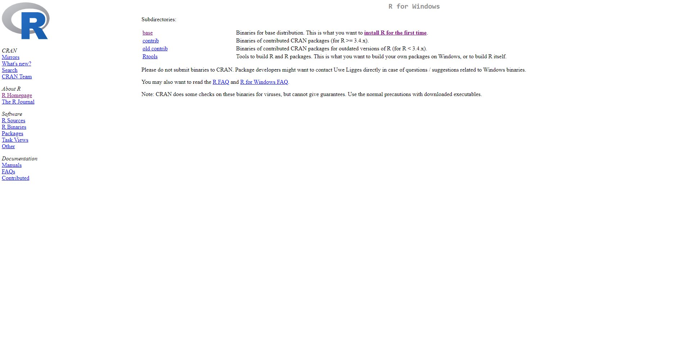
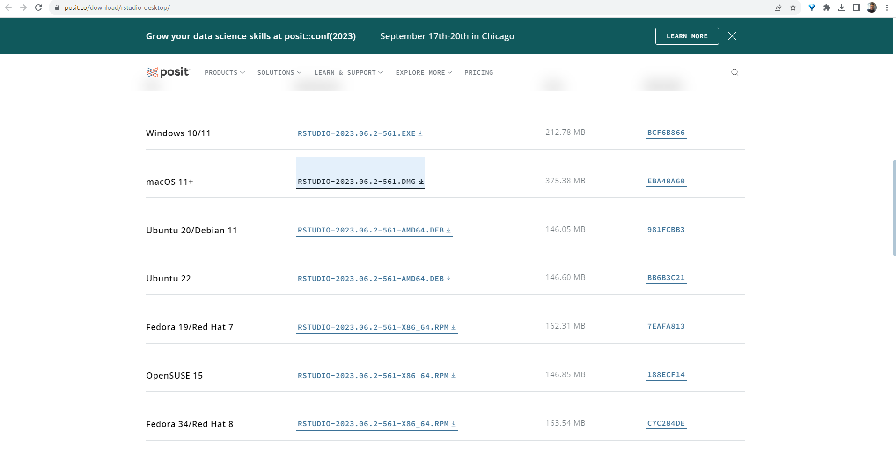

14 부록: R과 Rstudio 설치하기
여기서는 이 교재의 작업 환경에 해당하는 R과 Rstudio의 설치법을 설명합니다. 이 교재에서는 작업을 위한 프로그래밍 언어로 R을, 그 개발 환경으로 Rstudio를 이용합니다. 실제로 이용하는 언어는 R이지만, R 그 자체는 편리한 사용성을 제공하지 못합니다. 하지만, R이 이미 설치되어 있다면, Rstudio를 통해서 훨씬 편하고 세련된 환경에서 코딩을 할 수 있을 뿐만 아니라 R 자체로는 구현할 수 없는 중요한 추가적인 기능들을 활욯할 수 있게 됩니다. 따라서, 본 교재의 학습을 위해서는 R과 Rstudio 모두를 설치해야 합니다.
14.1 R 설치
R을 설치하기 위해서는 R다운로드 페이지로 이동해야 합니다.

여기에서 사용하는 운영체제에 맞추어 링크를 선택합니다. 여기서는 윈도우즈 사용환경을 가정하고 ’Download R for Windows’를 클릭합니다. 그러면 다음과 같은 화면이 나타날 것입니다.
 윈도우즈 이용자들은 두 가지를 설치해야 합니다. 하나는 ’base’라고 표시되어 있는 R프로그램 그 자체입니다. 해당 하이퍼링크를 클릭하면 이동하는 페이지에 ’Download R-4.3.1 for Windows’라고 표시된 하이퍼링크가 있을 것입니다 (4.3.1이라는 버전을 나타내는 숫자는 최신 업데이트에 따라 달라질 수 있습니다). 이를 클릭하면 다음 설치 파일이 다운로드 됩니다. 두번째로 다운로드 받을 파일은 위의 화면 캡춰에서 ’Rtools’라고 표시되어 있는 R의 확장 프로그램 입니다. 이 역시 R의 다양한 기능을 활용하기 위해서 반드시 필요합니다. 해당 링크를 클릭하여 앞서 다운 받은 R 버전에 맞는 RTools를 다운받습니다. 예컨대 앞서 R 4.3.1버전을 다운 받았으니, ’RTools 4.3’을 다운받는 것이지요.
윈도우즈 사용자는 반드시 R과 RTools 모두를 설치해야 합니다.
단, 맥 사용자는 R만 설치하면 됩니다.
이제 두 설치파일을 다운로드 받은 순서대로 더블클릭하여 설치를 완료하면 됩니다. 여기서도, 한 가지 주의사항이 있습니다. R은 오픈소스 언어이기 때문에, 상업 프로그램처럼 다양한 언어를 부드럽게 처리하지못하는 경우가 있습니다. 관련해서 가장 많은 에러를 양산하는 문제 중 하나가 R이 설치된 경로상에 한글이 섞여 있는 경우 입니다. 예컨대, 윈도우즈의 이용자 이름이 자신의 이름으로 되어 있다면, 설치경로가 에러를 만들어 내는 경우가 많습니다. 따라서, 윈도우즈 이용자 이름에 알파벳이 아닌 다른 문자가 섞여 있다면, R 설치시 설정하는 모든 경로를 이용자 이름이 섞이지 않도록 적절하게 수정해 주는 것이 좋습니다.
R 설치 경로는 알파벳만으로 이루어지도록 주의하세요.
14.2 Rstudio 설치
Rstudio는 오픈소스 프로젝트가 아니라 사기업인 Posit에 의해 관리되기 때문에 다운로드 및 설치가 더욱 쉽습니다. 다음 링크를 따라가서, 각자의 운영체제에 맞는 설치파일을 다운 받은 후 실행해 주면 됩니다. 다만, Rstuio의 설치는 R 설치가 모두 완료된 다음 해 주는 것이 불필요한 에러를 방지할 수 있습니다.
